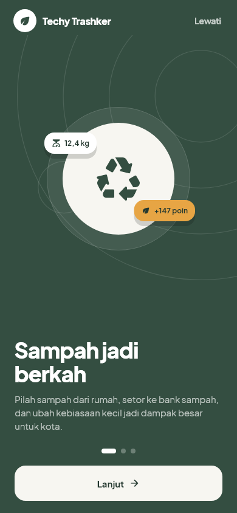
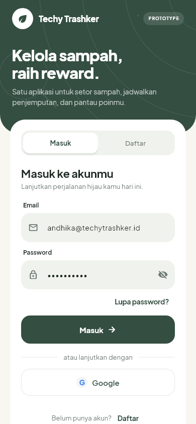
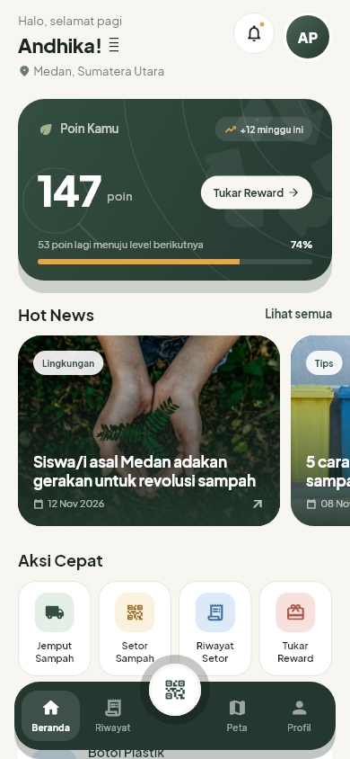
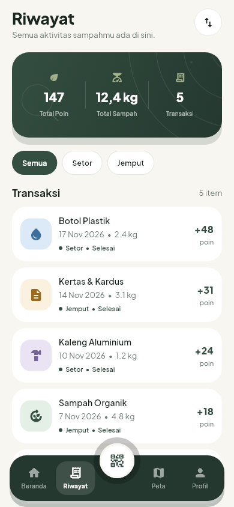
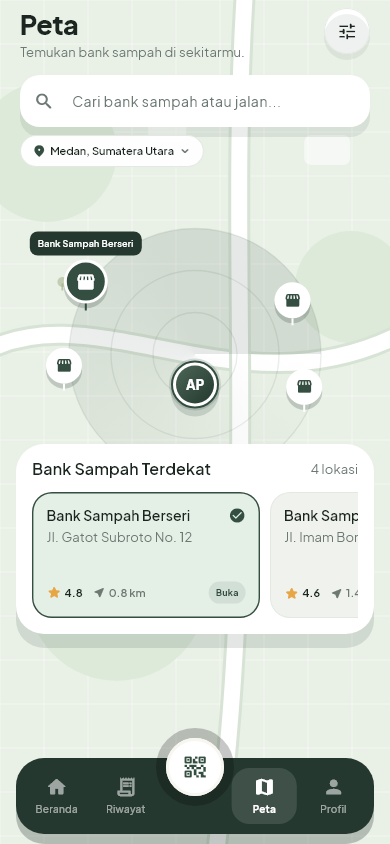
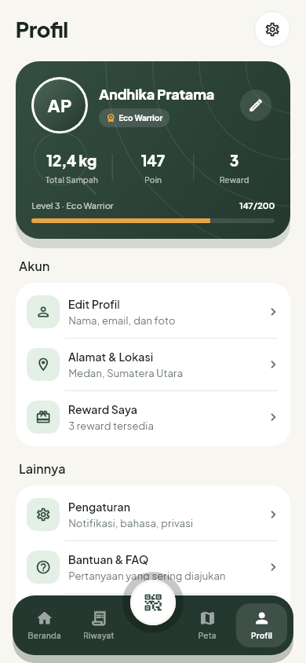
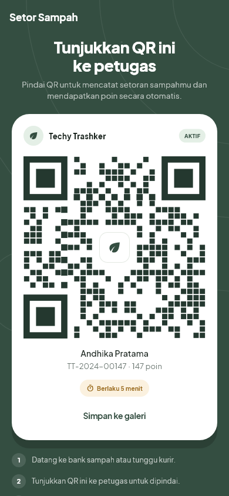

Catatan: prototype ini memakai data dummy di
lib/data/mock_data.dart. Foto berita memakai placeholder
Unsplash, dan QR masih berupa pola visual. Langkah berikutnya adalah
menyambungkan API, autentikasi, peta nyata, dan reward redemption.